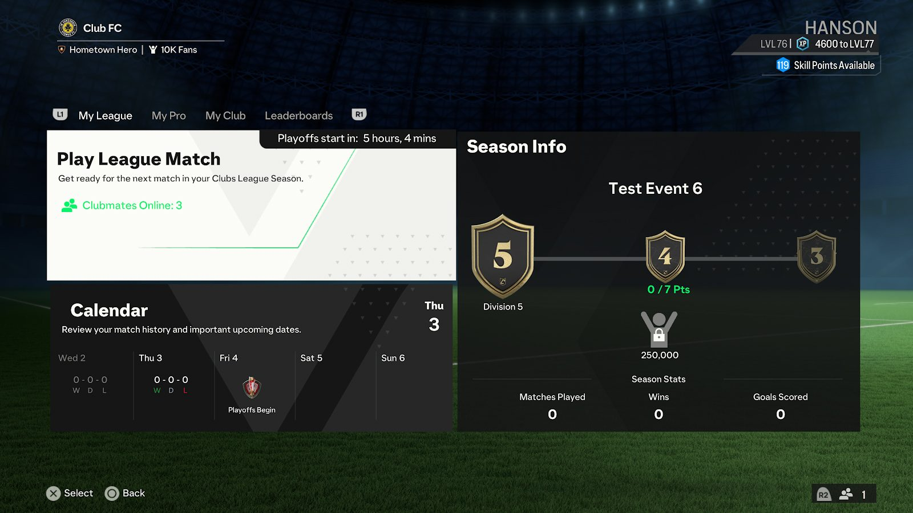
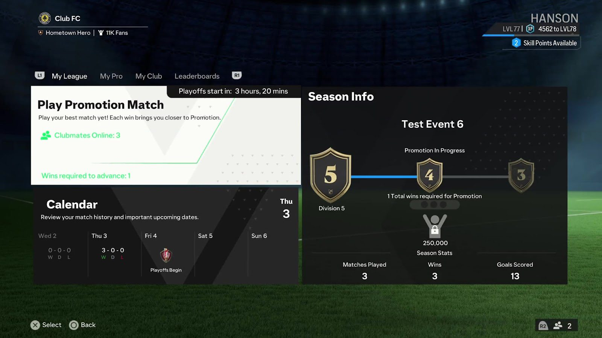
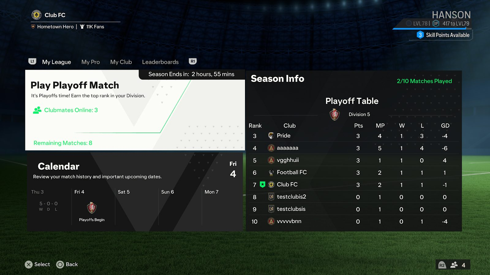
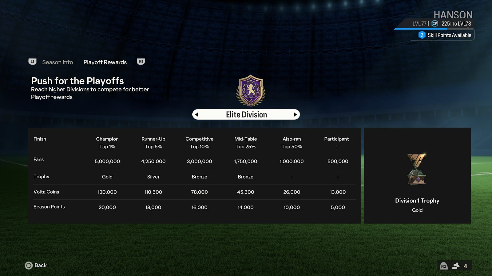
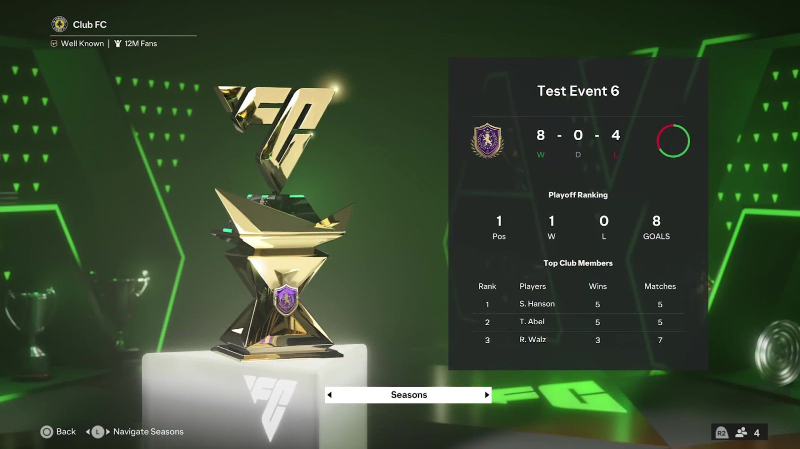

Liga de Clubes: No hay nada más gratificante que lograr algo por lo que te esfuerces como colectivo, como compañeros de equipo, como fans, como grupo de amistades, como club. Es la razón por la que todos amamos el futbol y por eso jugamos Clubes. Es por eso que en EA SPORTS FC™ 24 siempre estarás en el camino a la gloria con nuestro nuevo formato de Liga de Clubes. Cada temporada de liga de Clubes tendrá lugar durante aproximadamente 6 semanas y se dividirá en 2 fases que subirán la temperatura:
- Fase de liga
- Fase de eliminatorias
Fase de liga
En la fase de liga comenzamos cada nueva temporada. Acumula puntos ganando partidos y gana el derecho a luchar por ascender desde la 5.ª división a divisiones cada vez más altas, hasta llegar a lo más alto de la pirámide del futbol de Clubes: la División Élite. Cuanto más alto subas, mayores serán las recompensas por las que lucharás cuando llegue la hora de las eliminatorias.
Partidos de liga: A partir de la División 5, los clubes ya no tendrán un número limitado de partidos para obtener los puntos necesarios para luchar por el ascenso. En EA SPORTS FC™ 24, cada punto ganado lleva a tu club un paso más cerca del éxito. Eso significa que ninguna derrota afectará el total de puntos existentes de tu club y, lo que es más importante, que no desciendes , pero eso no significa que te lo vayamos a poner fácil. Cada división nueva tendrá rivales más fuertes y un objetivo de puntos requeridos más alto para alcanzar partidos de ascenso. Partidos de ascenso: Cuando un club haya ganado la cantidad de puntos requerida dentro de su división, irá a los partidos de ascenso. Estos son una serie de partidos que decidirán el destino de tu ascenso a medida que avances por las divisiones de la liga de Clubes. Los empates no te servirán aquí, tu club tendrá que ganar una cantidad especificada de un número fijo de partidos totales (gana 1 de 3 partidos, por ejemplo). Si alcanzas el umbral de victorias requerido, celebrarás el ascenso; si no llegas, tu club permanecerá en su división actual con un total reducido de puntos, lo que te situará a solo unos pasos de otro intento.
A medida que subas a través de las divisiones, la competencia por el ascenso se intensificará, lo que proporcionará un desafío adecuado a los clubes de todos los niveles de habilidad y garantizará un lugar reservado en la División Élite para los mejores de los mejores. Después de la fase de liga, todos los clubes se quedan fijos en sus respectivas divisiones y su atención pasará a las nuevas eliminatorias de clubes. Recompensas de liga: Cada vez que tu club obtenga un ascenso, ganarás recompensas de club en forma de fans para mejorar la reputación de tu club o ítems de personalización del club para señalar tu ascenso en las divisiones. Con cada nueva temporada, tu club pondrá en juego un nuevo conjunto de ítems de personalización de club temáticos. Cada conjunto incluye un uniforme, un tifo y un paquete de estadio. Alcanza las altas cotas de la División Élite para desbloquear el conjunto completo. Fase de eliminatorias: Las eliminatorias de Clubes son la gloria que corona el evento más importante de cada temporada de ligas de Clubes. Las eliminatorias, que se disputan durante la última semana de cada temporada de Clubes, son el momento de unir a la plantilla y luchar por el derecho a presumir y obtener grandes recompensas contra los mejores clubes de tu división. Al inicio de las eliminatorias, todos los clubes quedarán fijos en grupos según su división y tendrán que enfrentarse al desafío de completar un número fijo de partidos para clasificarse lo más alto posible en la tabla de eliminatorias de sus respectivas divisiones.
En los partidos de eliminatorias hay mucho en juego. Los empates no son una opción, ya que cada partido pasará al tiempo extra, seguido de penales para determinar quién gana. La diferencia de goles podría ser fundamental, así que competir hasta el final le dará a tu club una oportunidad contra la competencia. Después de que tu club haya completado todos los partidos de las eliminatorias de la temporada, podrás seguir jugando partidos de liga durante el período de fase de eliminatorias para aumentar la reputación de tu club y tu calificación de habilidad. Sin embargo, ya no podrás ganar puntos para ascender. Recompensas de eliminatorias y fin de temporada Después de cada temporada de la liga de Clubes, tanto tú como tu club ganarán recompensas según tu rendimiento en las eliminatorias. Con las miradas del mundo sobre tu club, las eliminatorias de Clubes te brindan la mejor oportunidad de hacer crecer la reputación de tu club, pero el verdadero premio es el trofeo de la Liga de Clubes.
Cada temporada tendrá su propio trofeo único en oro, plata y bronce, con el escudo de la división de tu liga para reconocer el rendimiento de tu club en las eliminatorias y que se exhibirá en tu nueva sala de trofeos (así como en tu estadio).
En reconocimiento a su contribución al club, cualquiera que contribuya con un mínimo de un partido de eliminatorias para su club y que siga en la plantilla al final de la temporada ganará MONEDAS VOLTA para gastar en el equipo más reciente en la TIENDA VOLTA y puntos de temporada para mejorar su camino de progreso compartido de Clubes y VOLTA FOOTBALL. Cuanto más alta sea la división y mejor sea la clasificación de tu club, mayor será la cantidad que recibirás. Todas las recompensas de las eliminatorias se te entregarán a ti y a tu club cuando ingreses a Clubes por primera vez después de un breve período de cálculo de recompensas. Una nueva temporada comenzará cuando termine la temporada anterior. En ese momento, los clubes regresarán a su división inicial y el camino a la cima comenzará de nuevo. Gracias por leer este análisis a fondo de lo que puedes esperar de Clubes de EA SPORTS FC™ 24. Con Cross-Play para unir a nuestra comunidad, el nuevo sistema de Liga de Clubes que aumenta la emoción, la reputación del club que ayuda a crear la identidad de tu club y los Estilos de juego a refinar la tuya, este será un gran año. Estamos muy felices con estas novedades y esperamos que ustedes también lo estén. ¡Ansiamos ver a todo el mundo en la cancha!